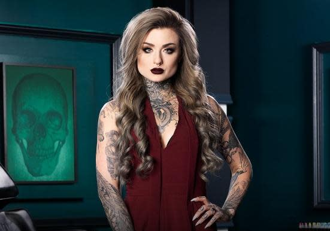
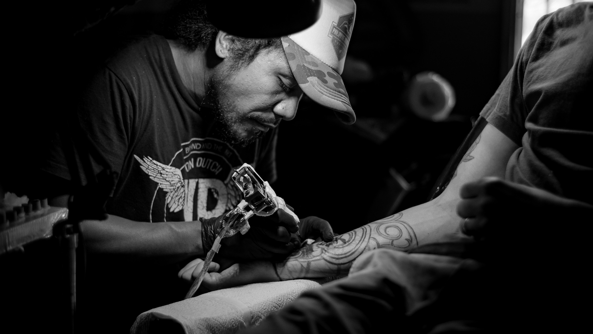
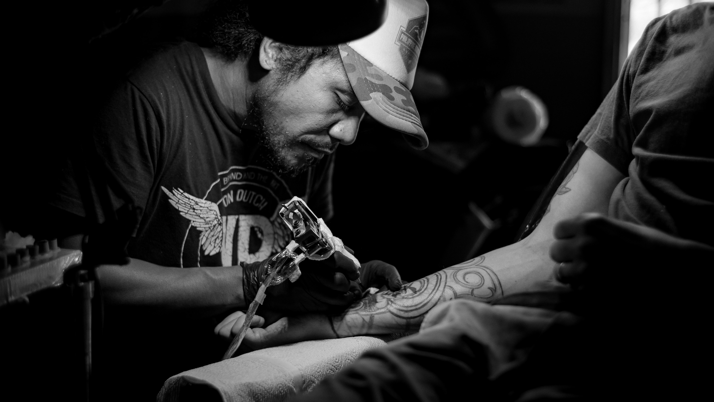
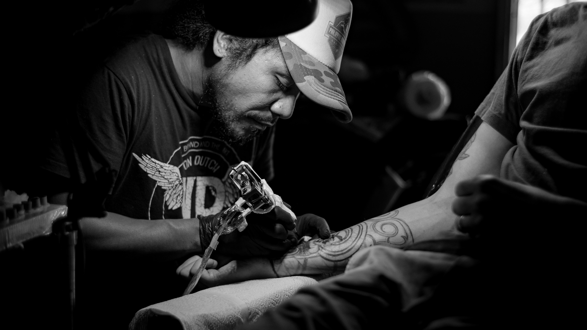
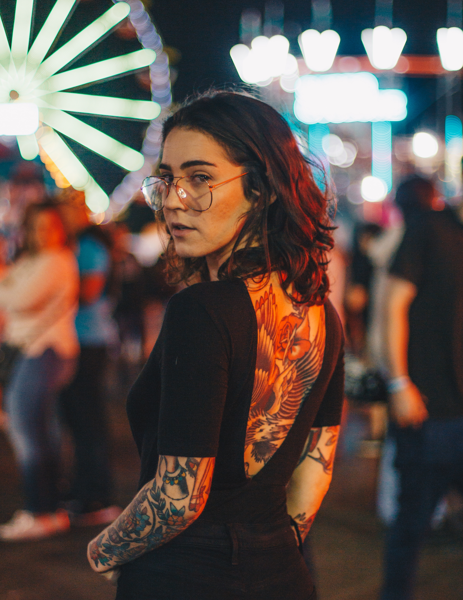
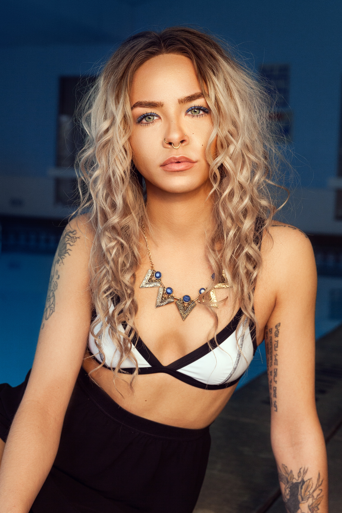
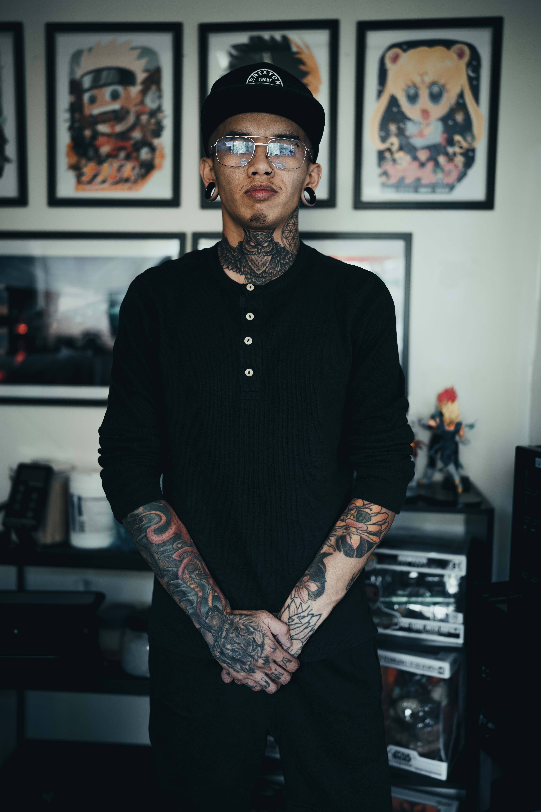

 



Ryan Asheley Malarkey is the owner of the shop with the highest volume of customers. She is known for her signature black-and-gray tattoo designs feature beadwork, lace detail, and ornamental jewels. She won season 8 of Ink Master and has a very extensive portfolio.
Matthew Trent is one of the countries top tattoo artists. He has been at our shop since opening and has been tattoing for 7 years. He specializes in photorealism, so many customers come to him for portraits.
Tim Reynolds is also one of our oldest artists who has been at the shop since opening. We recuited him from Las Vegas as he had been tattooing at another shop there for 5 years. He speacializes in New School and utilizing bright colors.
Melody Marie is our newest artist. She had previosuly been tattooing in Florida before moving to our shop. She has 10 years of expereince, specializing in Japanese.


